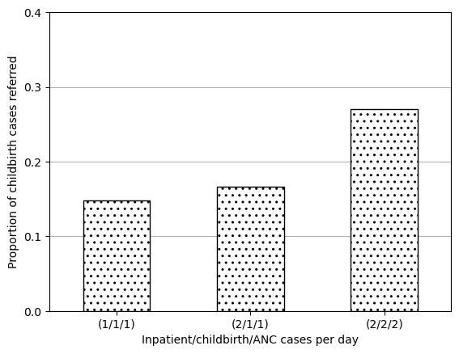
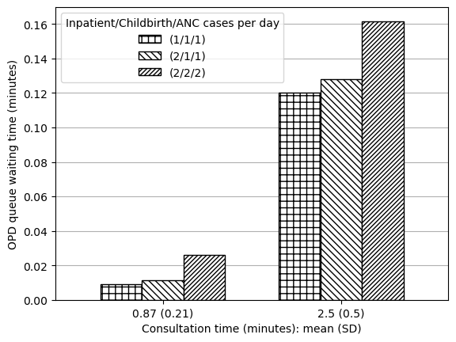
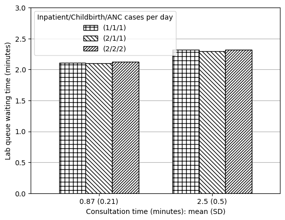

Note: These are created from 10 replications currently for simplicity. At 10 replications, we would expect mean values to vary only slightly from further replication numbers. Hence, if felt similar at 10, have marked as succesfully reproduced without also testing at 100 replications.
Parameters
In these figures, we vary configuration 1 as follows:
Number of inpatient/childbirth/ANC cases per day:
1 = IAT 1440 (e.g. like IPD cases for config1)
2 = IAT 720 (as 2880 is 0.5 per day and 1440 is 1 per day)
Average service time for outpatients:
0.87 (0.21) (same as config1)
2.5 (0.5) (as in figure 2)
Set up
# To run modelimport PHC# To import results and produce figuresfrom reproduction_helpers import process_resultsimport pandas as pdimport osimport matplotlib.pyplot as pltimport numpy as np# To speed up run timefrom multiprocessing import Pool'''# Additional package to record runtime of this notebookimport timestart = time.time()'''
'\n# Additional package to record runtime of this notebook\nimport time\nstart = time.time()\n'
# TODO: Run with 100 replications# Varying number of inpatient, childbirth and ANC casesarr_dict = [ {'IPD_iat': 1440,'delivery_iat': 1440,'ANC_iat': 1440,'rep_file': 'arr111' }, {'IPD_iat': 720,'delivery_iat': 1440,'ANC_iat': 1440,'rep_file': 'arr211', }, {'IPD_iat': 720,'delivery_iat': 720,'ANC_iat': 720,'rep_file': 'arr222', }]# Varying service timeserv_dict = [ {'mean': 0.87,'sd': 0.21,'consult_boundary_1': 0.5, # From PHC.py'consult_boundary_2': 0.3, # From PHC.py'rep_file': 'serv087' }, {'mean': 2.5,'sd': 0.5,'consult_boundary_1': 1, # From Figure 2 (which was a guess)'consult_boundary_2': 1, # From Figure 2 (which was a guess)'rep_file': 'serv25' }]
Create each combination for the reproduction
dict_list = []for arr in arr_dict:for serv in serv_dict:# Combine the dictionaries comb = {**arr, **serv}# Replace the file name comb['rep_file'] =f'''f3_{arr['rep_file']}_{serv['rep_file']}.xls'''# Save to list dict_list.append(comb)len(dict_list)
6
# Append 's_' to all itemsfor i, d inenumerate(dict_list): dict_list[i] = {f's_{k}': v for k, v in d.items()}# Preview exampledict_list[0]
Run the model (with parallel processing to reduce run time)
'''# Wrapper function to allow input of dictionary with pooldef wrapper(d): return PHC.main(**d)# Create a process pool that uses all CPUswith Pool() as pool: # Run PHC.main() using each of inputs from config pool.map(wrapper, dict_list)'''
'\n# Wrapper function to allow input of dictionary with pool\ndef wrapper(d):\n return PHC.main(**d)\n\n# Create a process pool that uses all CPUs\nwith Pool() as pool:\n # Run PHC.main() using each of inputs from config\n pool.map(wrapper, dict_list)\n'
Process results
Function for reshaping these as repeat a few times
def reshape_087_25(s):''' Reshapes series that has results from scenarios including mean 0.87 and 2.5 to produce a 3 x 2 dataframe where rows are consultation time and columns are the arrivals Parameters: ----------- s : series Series with results from figure 3 model variants Returns: -------- res : dataframe Dataframe where rows are consultation time and columns are arrivals '''# Reshape data so in appropriate format for plotting grouped bar chart names = ['0.87 (0.21)', '2.5 (0.5)'] s111 = [s['f3_arr111_serv087'], s['f3_arr111_serv25']] s211 = [s['f3_arr211_serv087'], s['f3_arr211_serv25']] s222 = [s['f3_arr222_serv087'], s['f3_arr222_serv25']] res = pd.DataFrame( {'(1/1/1)': s111, '(2/1/1)': s211, '(2/2/2)': s222}, index=names)return res
def plot_087_25(df, ylab, ylim=False, save_path=False):''' Plots results from varying cases and consultation time Parameters: ----------- df : pd.DataFrame Dataframe reshaped using reshape_087_25() '''# Plot data ax = df.plot.bar(edgecolor='black', color='white', width=0.7)# Add patterns bars = ax.patches pattern = np.repeat(['++', '\\\\\\\\', '//////'], 2)for bar, hatch inzip(bars, pattern): bar.set_hatch(hatch) ax.legend(title='Inpatient/Childbirth/ANC cases per day')# Adjust figure plt.xlabel('Consultation time (minutes): mean (SD)') plt.ylabel(ylab) plt.xticks(rotation=0) ax.grid(axis='y')if ylim: plt.ylim(ylim) ax.set_axisbelow(True)if save_path: plt.savefig(save_path, bbox_inches='tight') plt.show()
Create Figure 3A
# Import and process resultsdata_full = process_results(['f3_arr111_serv087', 'f3_arr211_serv087', 'f3_arr222_serv087','f3_arr111_serv25', 'f3_arr211_serv25', 'f3_arr222_serv25'])# Filter to doctor utilisationa3 = data_full.loc['doc occ']a3
ax = data_3d.plot.bar(edgecolor='black', color='white', hatch='..')plt.xlabel('Inpatient/childbirth/ANC cases per day')plt.ylabel('Proportion of childbirth cases referred')plt.yticks(np.arange(0, 0.5, 0.1))plt.xticks(rotation=0)ax.grid(axis='y')ax.set_axisbelow(True)plt.savefig(fig3d_path, bbox_inches='tight')plt.show()

Reproducing in-text result 1
This result refers to “waiting times for outpatient-related resources (laboratory, OPD consultation, etc.)”. I assume this to refer to:
OPD queue waiting time (minutes)
Lab queue waiting time (minutes)
# Get OPD queue timedata_txt1_opd = reshape_087_25(data_full.loc['OPD Q wt'])data_txt1_opd['Output'] ='OPD queue waiting time (minutes)'# Get lab queue timedata_txt1_lab = reshape_087_25(data_full.loc['Lab Q wt'])data_txt1_lab['Output'] ='Lab queue waiting time (minutes)'# Combine, round, save and show dataframedata_txt1 =round(pd.concat([data_txt1_opd, data_txt1_lab]), 3)data_txt1.index.names = ['Consultation time: mean (SD)']data_txt1.to_csv(txt1_path)data_txt1
(1/1/1)
(2/1/1)
(2/2/2)
Output
Consultation time: mean (SD)
0.87 (0.21)
0.009
0.011
0.026
OPD queue waiting time (minutes)
2.5 (0.5)
0.120
0.128
0.162
OPD queue waiting time (minutes)
0.87 (0.21)
2.104
2.096
2.125
Lab queue waiting time (minutes)
2.5 (0.5)
2.318
2.297
2.322
Lab queue waiting time (minutes)
Produced figures but, due to the very small amount of change observed in minutes, feel it is misleading, so will just save table.
plot_087_25(data_txt1_opd, ylab='OPD queue waiting time (minutes)')

plot_087_25(data_txt1_lab, ylim=[0, 3], ylab='Lab queue waiting time (minutes)')

Run time
'''# Find run time in secondsend = time.time()runtime = round(end-start)# Display converted to minutes and secondsprint(f'Notebook run time: {runtime//60}m {runtime%60}s')'''
"\n# Find run time in seconds\nend = time.time()\nruntime = round(end-start)\n\n# Display converted to minutes and seconds\nprint(f'Notebook run time: {runtime//60}m {runtime%60}s')\n"